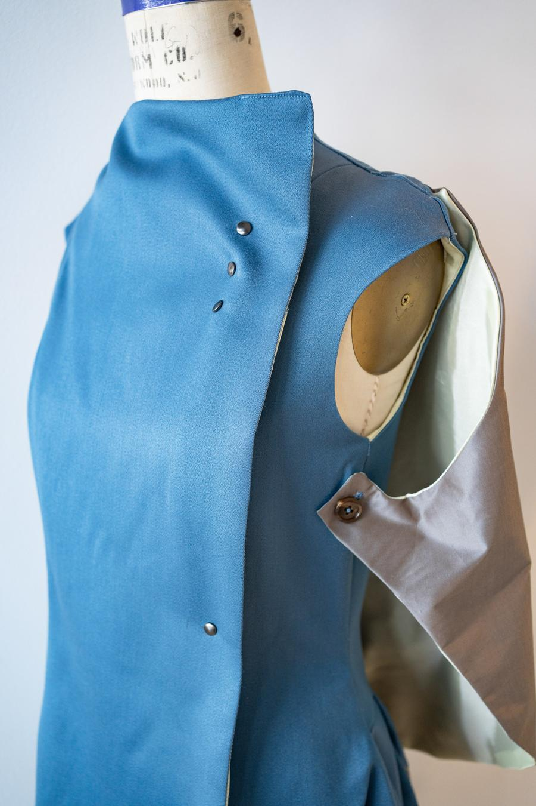
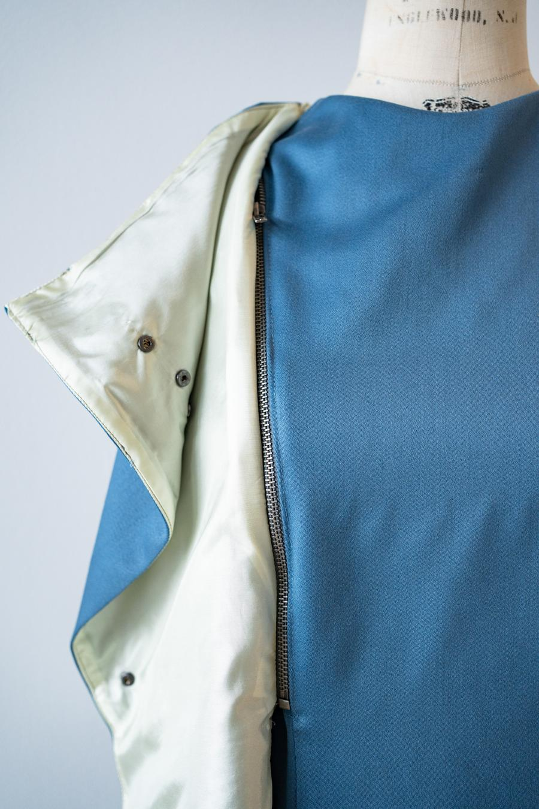
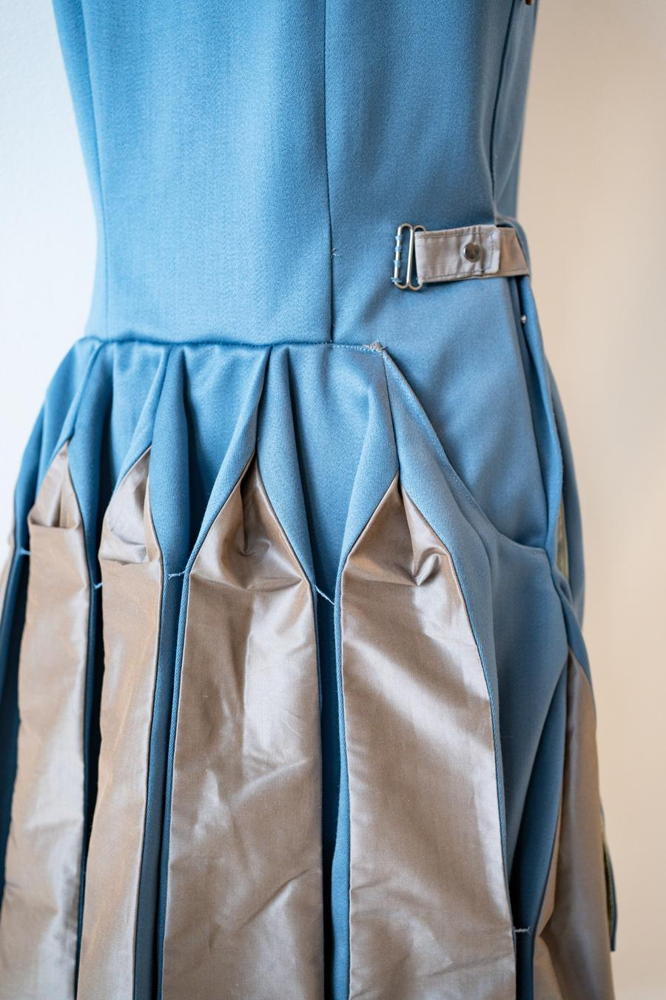
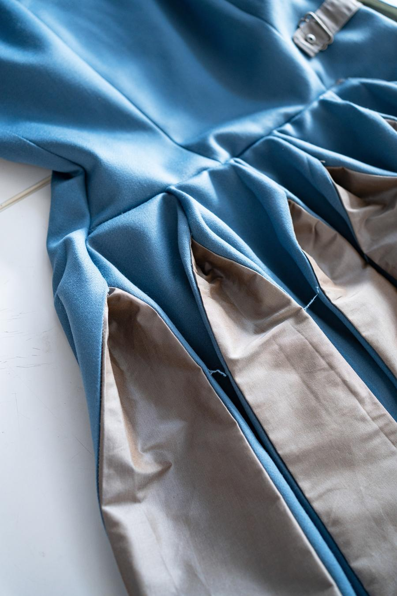

The project was inspired by the muse of eloquence and meditation—Polymnia, the power of silence, the instruction without words. Resonating with my elder brother, who is physically challenged but strong in thinking and has a rich spiritual world.
Leading to research on how he combines his aesthetic interest with the functionality. Creating a fusion collection of the decency and elegance of suiting with the protectiveness and convenience of outerwear.


BIBLIOGRAPHY AND PROJECT STATEMENT


SEE FINAL GARMENT DETAILS



